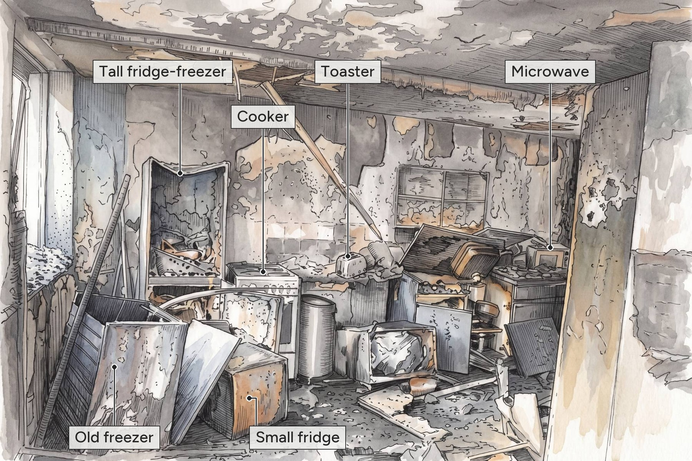

How the Fire Began
The Grenfell fire is often described as a simple kitchen fire that spread. The reality was far more complex, and far more preventable.
Flat 16, Fourth Floor
A forensic report by Dr Niamh Nic Daéid of the Leverhulme Research Centre for Forensic Science concluded that the fire began “in or around” a Hotpoint fridge-freezer in flat 16. The occupant, Behailu Kebede, was woken by his smoke alarm and saw smoke near the fridge-freezer and kitchen window. He called the fire brigade immediately.
00:54999 call logged
00:59First engine arrives
01:07Crew enters flat
01:14Kitchen reached
The crew initially searched the bedrooms before reaching the kitchen at 01:14. There, firefighter Daniel Brown described seeing an “isolated curtain of flame from about 2-3 feet in the air to the ceiling.” Thermal imaging showed that hot gases and flames had already spread across the window space, the point at which the fire reached the exterior cladding.
Source: BBC News, Grenfell Tower: What happened[R030]. Illustration recreated from a photograph in that report.
